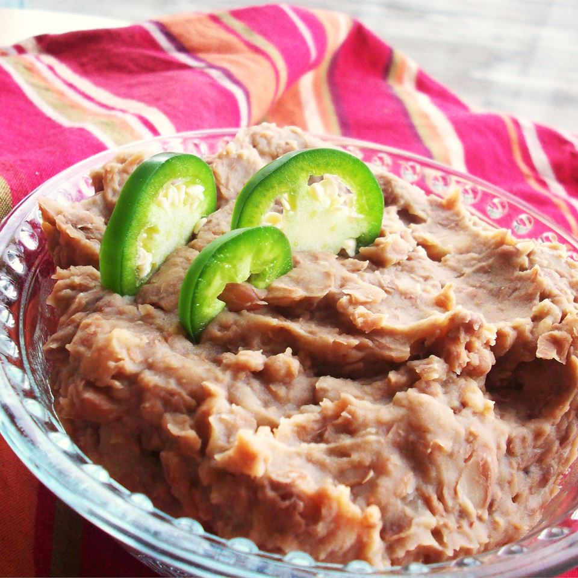

Slowcooker Mexican Style Beans

Description
These beans are great for making bean and cheese burritos or bean dip.
Healthy. Simple. Serves 12-15 people
Ingredients
- 1 onion, peeled and quartered
- 3 cups dry pinto beans, rinsed
- 3 fresh jalapeno peppers, chopped
- 2 tablespoons minced garlic
- 2 tsp of salt
- 2 tsp of ground black pepper
- ¼ tsp ground cumin
- 8 cups water
Directions
- Add all ingredients into a slow cooker
- Stir to combine
- Cook on High for 8 hours
- Mash beans to desired consistency.
Home